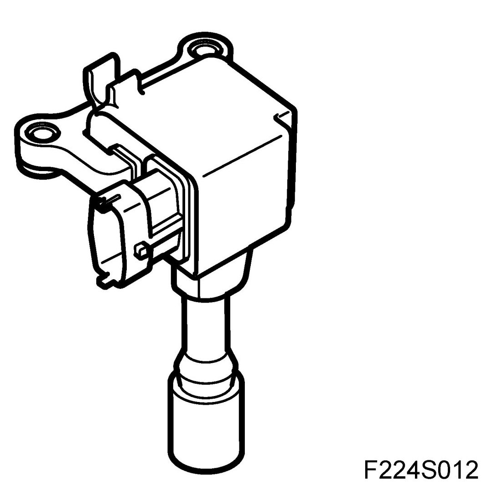
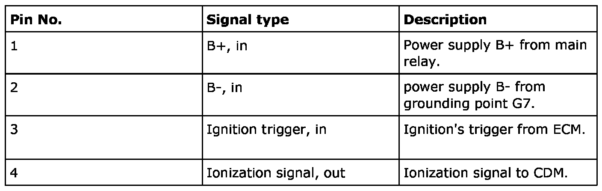
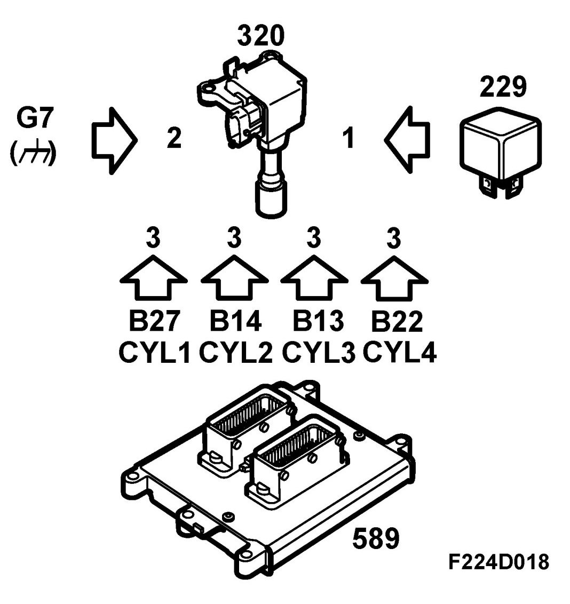
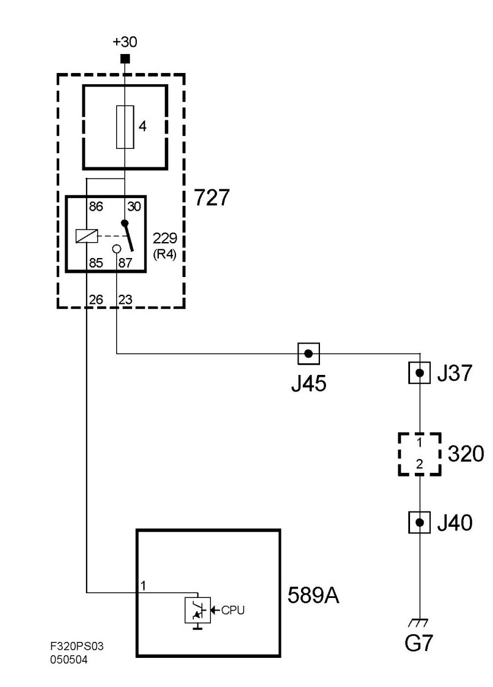
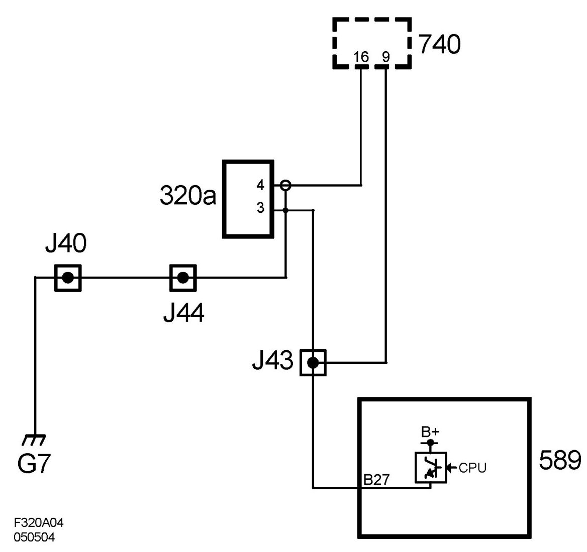
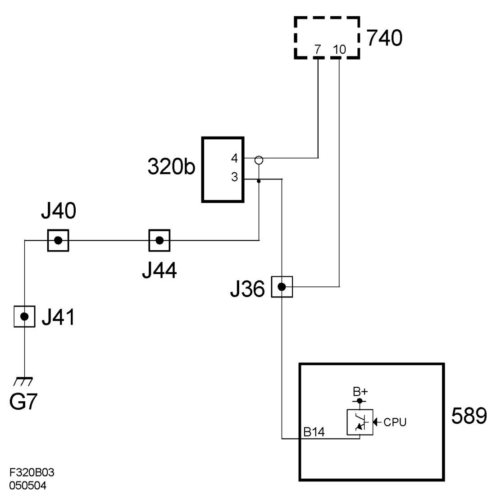
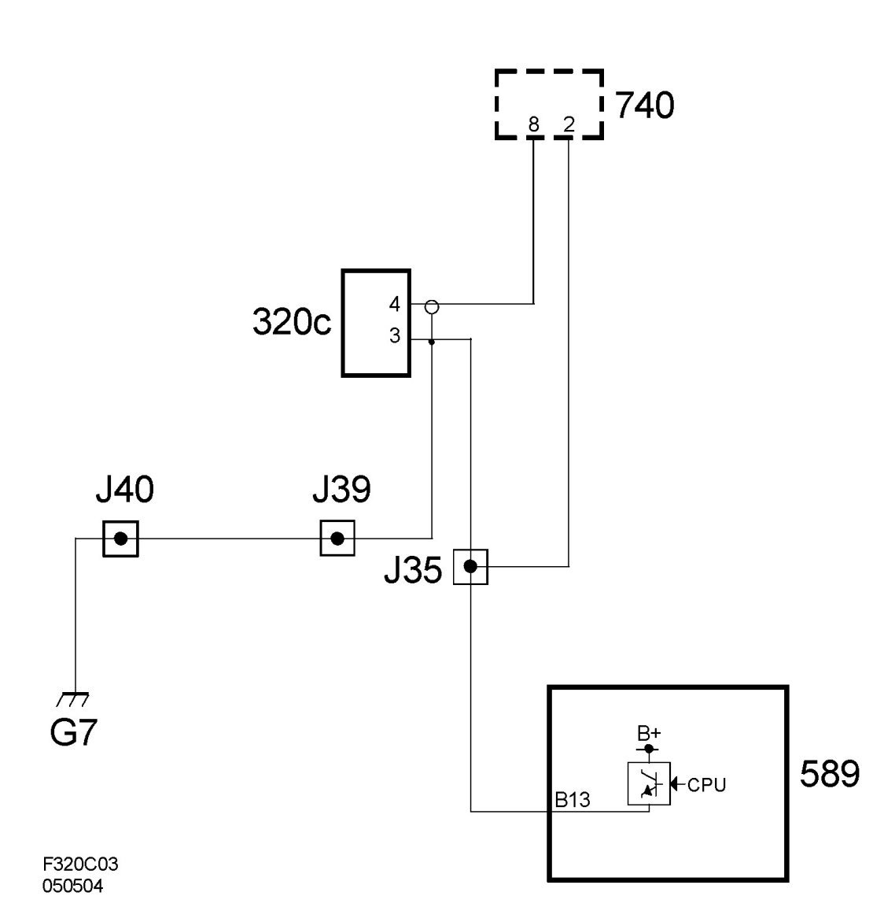
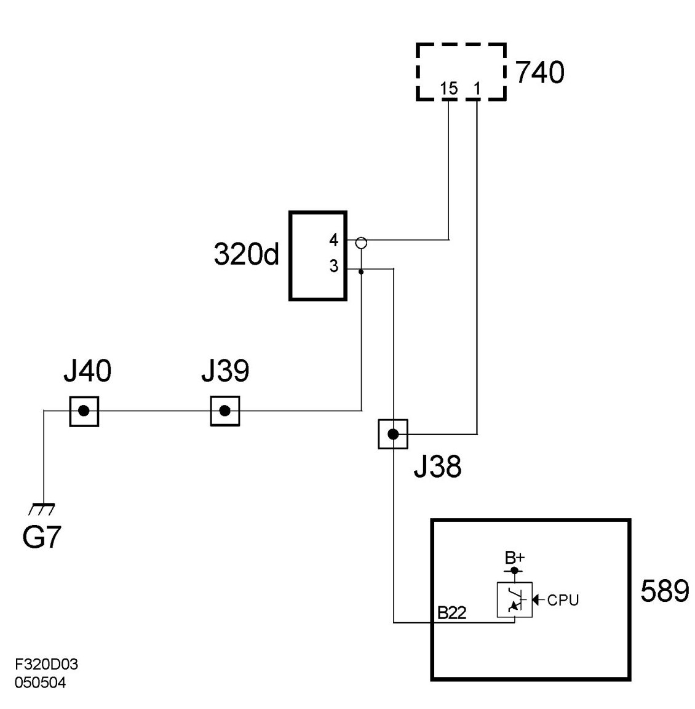

Ignition Coil: Description and Operation
Ignition Coil With Integrated Power Stage (320), T8
Location
Ignition coil with integrated power stage, cyl 1 (320a)
Ignition coil with integrated power stage, cyl 2 (320b)
Ignition coil with integrated power stage, cyl 3 (320c)
Ignition coil with integrated power stage, cyl 4 (320d)
Main task
An ignition coil has the following tasks:
- Generate the high-voltage spark that starts the combustion.
- Together with the spark plug, measure ionization current.
These signals are used for knock control, synchronization of ignition timing/fuel injection and for misfire detection.
Type
Inductive ignition coil with integrated power stage and circuits for ionization current measurement.

Connection


The ignition coil contains a transformer (ignition coil) and a power stage that is operated, triggered, by ECM.
When ignition coil pin 3 is grounded, the power stage conducts so that current can move through the ignition coil's primary winding. When the conduction is no longer grounded, the spark is fired.
Thus, ECM determines both ignition coil charge time (cam angle) and ignition angle. The ignition coil also contains circuits for ionization current measurement.
One end of the secondary winding is connected to a voltage source of 80 V. Thus, 80 V runs across the spark plug continually, except for when the spark is fired, as voltage is then considerably higher.
The existing pressure and temperature in the combustion chamber cause the gases to ionize, which means that current begins to flow across the spark plug gap without a spark being generated. The degree of ionization determines how much current can flow across the spark plug gap. No combustion means there is no ionization. Knocking produces extreme ionization.
Ionization current measurement makes it possible to measure existing pressure and temperature in the combustion chamber. This information is used for knocks, misfires and combustion detection.
The ionization signal from the ignition coils constitutes a "raw signal" that must be further processed (which occurs in CDM) before it is used by ECM.
Wiring diagram, supply

Wiring diagram, control (ignition coil 1)

Wiring diagram, control (ignition coil 2)

Wiring diagram, control (ignition coil 3)

Wiring diagram, control (ignition coil 4)
